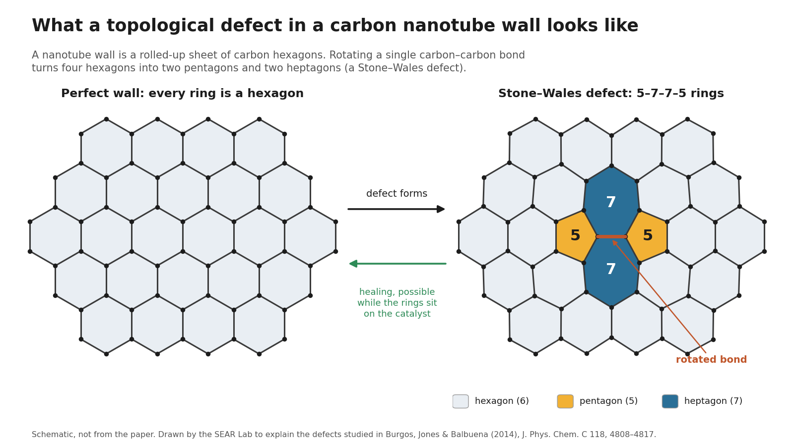

Carbon Nanotube Growth
Computer simulations of how single-walled carbon nanotubes grow on metal catalyst particles, and where flaws in their walls come from.
- Completed
- 2011–2014
- Materials
- Nanotechnology
- Molecular simulation
![Schematic. Left: a honeycomb-walled carbon nanotube rising from a small dome of metal atoms that rests on a flat substrate, with carbon atoms from the feed gas arriving at the particle. Arrows mark the metal-substrate grip and the metal-carbon grip. Right: three small sketches of what happens as the metal-substrate grip gets stronger. Too weak: a carbon cap wraps the particle and no tube grows. Strong enough: the cap lifts off and a good-quality tube grows. Too strong: the particle spreads into a thin film and disordered carbon forms.](img/hero.png)
In plain English
Carbon nanotubes are sheets of carbon one atom thick rolled into tubes about a nanometer wide. They are strong and conduct electricity well, but only if they grow cleanly. They are usually grown from tiny metal particles resting on a support surface and fed with a carbon-containing gas, and small changes in conditions decide whether a good tube, a flawed tube or soot results.
This work, with Juan C. Burgos and Perla B. Balbuena in chemical engineering at Texas A&M University, used molecular dynamics simulations, which follow every atom, to study that growth. A 2011 paper examined how the grip between the metal particle and the surface beneath it shapes the particle and decides whether a tube grows at all. A 2014 paper tracked how flaws in the tube wall form and heal while the growing tube is still attached to the catalyst. Both appeared in The Journal of Physical Chemistry C.
Main points
- Grew nanotubes atom by atom in reactive molecular dynamics simulations on small nickel catalyst particles at about 1000 K.
- Showed that the catalyst's grip on its support sets the particle's shape, which in turn decides whether a clean tube grows.
- Linked the catalyst's shape to the kinds of flaws in the tube wall, and showed flaws can heal only while the tube is on the catalyst.
- Completed work from Dr. Jones's time at Texas A&M, before the SEAR Lab; the simulation codes belong to the Balbuena group.
Papers
How the surface under a catalyst shapes nanotube growth
Burgos, J.C., Jones, E., & Balbuena, P.B. (2011). Effect of the metal–substrate interaction strength on the growth of single-walled carbon nanotubes. The Journal of Physical Chemistry C, 115(15), 7668–7675. https://doi.org/10.1021/jp200919j
Does the surface a metal catalyst sits on matter for growing nanotubes? Yes: too weak or too strong a grip spoils growth.
- The strength of the metal–substrate attraction sets the catalyst particle's shape: when it is attractive, the particle wets the surface and gets shorter.
- A flatter particle helps nanotube caps lift off; with too weak an attraction the carbon cap stays on and encapsulates the particle, or even pulls it off the surface.
- A suitable substrate can prevent catalyst poisoning, because its repulsion pushes carbon atoms upward and keeps the particle's base catalytically active.
- A growth diagram of metal–substrate against metal–carbon strength shows four zones: two where the particle is encapsulated, one of high-quality single-walled tubes, and one of highly defective or complex carbon at extreme substrate attraction.
How flaws form and heal as carbon nanotubes grow
Burgos, J.C., Jones, E., & Balbuena, P.B. (2014). Dynamics of topological defects in single-walled carbon nanotubes during catalytic growth. The Journal of Physical Chemistry C, 118(9), 4808–4817. https://doi.org/10.1021/jp412708h
Where do flaws in carbon nanotube walls come from? Simulations show the metal catalyst both creates and heals them, depending on its shape.
- Defects heal only while the carbon network is still attached to the catalyst, and a strong interaction between the catalyst surface and the tube's carbon lattice is needed both to form and to heal them.
- The catalyst's shape decides which defects appear: Stone–Wales and 5–7 defects occur however rounded the particle is, while vacancies are characteristic of tubes grown on flat particles.
- Particles strongly bound to the support, and so flatter, grew more defective tubes than near-spherical ones.
- Slow growth favors better tubes, in line with other theoretical and experimental studies, so catalysts that bind carbon weakly are expected to grow more defective tubes.

People
- Erick C. Jones Jr., PhD, PEPrincipal Investigator · SEAR Lab directorin
- Juan C. BurgosAuthor, The Journal of Physical Chemistry C 2011 · Author, The Journal of Physical Chemistry C 2014
- Perla B. BalbuenaAuthor, The Journal of Physical Chemistry C 2011 · Author, The Journal of Physical Chemistry C 2014
Profiles marked in link to LinkedIn. More past and present lab members are on the SEAR Lab team page.